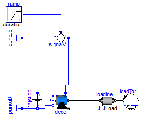
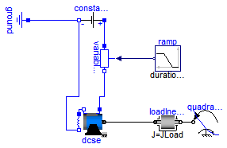
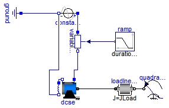
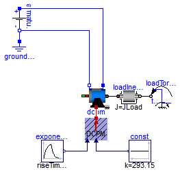
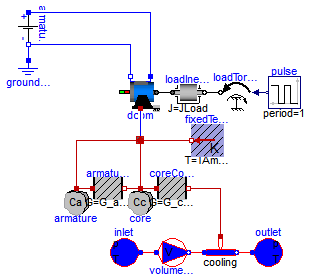
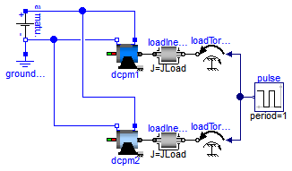
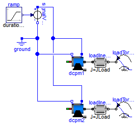

Extends from Modelica.Icons.ExamplesPackage (Icon for packages containing runnable examples).
| Name | Description |
|---|---|
| Test example: DC with permanent magnet starting with voltage ramp | |
| Test example: DC with electrical ecxitation starting with voltage ramp | |
| Test example: DC with serial excitation starting with voltage ramp | |
| Test example: DC with serial excitation starting with voltage ramp | |
| Test example: Investigate temperature dependecy of a DCPM motor | |
| Test example: Cooling of a DCPM motor | |
| Test example: Compare DCPM motors transient - quasistationary | |
| Test example: Investigate influence of losses on DCPM motor performance |
 Modelica.Electrical.Machines.Examples.DCMachines.DCPM_Start
Modelica.Electrical.Machines.Examples.DCMachines.DCPM_Start

Extends from Modelica.Icons.Example (Icon for runnable examples).
| Type | Name | Default | Description |
|---|---|---|---|
| Voltage | Va | 100 | Actual armature voltage [V] |
| Time | tStart | 0.2 | Start of armature voltage ramp [s] |
| Time | tRamp | 0.8 | Armature voltage ramp [s] |
| Torque | TLoad | 63.66 | Nominal load torque [N.m] |
| Time | tStep | 1.5 | Time of load torque step [s] |
| Inertia | JLoad | 0.15 | Load's moment of inertia [kg.m2] |
model DCPM_Start "Test example: DC with permanent magnet starting with voltage ramp" extends Modelica.Icons.Example; parameter Modelica.SIunits.Voltage Va=100 "Actual armature voltage"; parameter Modelica.SIunits.Time tStart=0.2 "Start of armature voltage ramp"; parameter Modelica.SIunits.Time tRamp=0.8 "Armature voltage ramp"; parameter Modelica.SIunits.Torque TLoad=63.66 "Nominal load torque"; parameter Modelica.SIunits.Time tStep=1.5 "Time of load torque step"; parameter Modelica.SIunits.Inertia JLoad=0.15 "Load's moment of inertia";Machines.BasicMachines.DCMachines.DC_PermanentMagnet dcpm; Modelica.Blocks.Sources.Ramp ramp( duration=tRamp, height=Va, startTime=tStart); Modelica.Electrical.Analog.Sources.SignalVoltage signalVoltage; Modelica.Electrical.Analog.Basic.Ground ground; Modelica.Mechanics.Rotational.Components.Inertia loadInertia( J=JLoad); Modelica.Mechanics.Rotational.Sources.TorqueStep loadTorqueStep( startTime=tStep, stepTorque=-TLoad, useSupport=false); equationconnect(ramp.y, signalVoltage.v); connect(signalVoltage.p, dcpm.pin_ap); connect(signalVoltage.n, ground.p); connect(dcpm.pin_an, signalVoltage.n); connect(loadInertia.flange_b, loadTorqueStep.flange); connect(dcpm.flange, loadInertia.flange_a); end DCPM_Start;
Modelica.Electrical.Machines.Examples.DCMachines.DCEE_Start
Extends from Modelica.Icons.Example (Icon for runnable examples).
| Type | Name | Default | Description |
|---|---|---|---|
| Voltage | Va | 100 | Actual armature voltage [V] |
| Time | tStart | 0.2 | Start of armature voltage ramp [s] |
| Time | tRamp | 0.8 | Armature voltage ramp [s] |
| Voltage | Ve | 100 | Actual excitation voltage [V] |
| Torque | TLoad | 63.66 | Nominal load torque [N.m] |
| Time | tStep | 1.5 | Time of load torque step [s] |
| Inertia | JLoad | 0.15 | Load's moment of inertia [kg.m2] |
model DCEE_Start "Test example: DC with electrical ecxitation starting with voltage ramp" extends Modelica.Icons.Example; parameter Modelica.SIunits.Voltage Va=100 "Actual armature voltage"; parameter Modelica.SIunits.Time tStart=0.2 "Start of armature voltage ramp"; parameter Modelica.SIunits.Time tRamp=0.8 "Armature voltage ramp"; parameter Modelica.SIunits.Voltage Ve=100 "Actual excitation voltage"; parameter Modelica.SIunits.Torque TLoad=63.66 "Nominal load torque"; parameter Modelica.SIunits.Time tStep=1.5 "Time of load torque step"; parameter Modelica.SIunits.Inertia JLoad=0.15 "Load's moment of inertia";Machines.BasicMachines.DCMachines.DC_ElectricalExcited dcee; Modelica.Blocks.Sources.Ramp ramp( duration=tRamp, height=Va, startTime=tStart); Modelica.Electrical.Analog.Sources.SignalVoltage signalVoltage; Modelica.Electrical.Analog.Basic.Ground ground; Modelica.Electrical.Analog.Sources.ConstantVoltage constantVoltage(V=Ve); Modelica.Electrical.Analog.Basic.Ground groundExcitation; Modelica.Mechanics.Rotational.Components.Inertia loadInertia( J=JLoad); Modelica.Mechanics.Rotational.Sources.TorqueStep loadTorqueStep( startTime=tStep, stepTorque=-TLoad, useSupport=false); equationconnect(ramp.y, signalVoltage.v); connect(signalVoltage.p, dcee.pin_ap); connect(signalVoltage.n, ground.p); connect(dcee.pin_an, ground.p); connect(constantVoltage.n, groundExcitation.p); connect(dcee.pin_ep, constantVoltage.p); connect(dcee.pin_en, constantVoltage.n); connect(loadInertia.flange_b, loadTorqueStep.flange); connect(dcee.flange, loadInertia.flange_a); end DCEE_Start;
Modelica.Electrical.Machines.Examples.DCMachines.DCSE_Start
Extends from Modelica.Icons.Example (Icon for runnable examples).
| Type | Name | Default | Description |
|---|---|---|---|
| Voltage | Va | 100 | Actual armature voltage [V] |
| Time | tStart | 0.1 | Start of resistance ramp [s] |
| Time | tRamp | 0.9 | Resistance ramp [s] |
| Torque | TLoad | 63.66 | Nominal load torque [N.m] |
| AngularVelocity | wLoad | 1410*2*Modelica.Constants.pi... | Nominal load speed [rad/s] |
| Inertia | JLoad | 0.15 | Load's moment of inertia [kg.m2] |
model DCSE_Start
"Test example: DC with serial excitation starting with voltage ramp"
extends Modelica.Icons.Example;
parameter Modelica.SIunits.Voltage Va=100 "Actual armature voltage";
parameter Modelica.SIunits.Time tStart=0.1 "Start of resistance ramp";
parameter Modelica.SIunits.Time tRamp=0.9 "Resistance ramp";
parameter Modelica.SIunits.Torque TLoad=63.66 "Nominal load torque";
parameter Modelica.SIunits.AngularVelocity wLoad(displayUnit="1/min")=1410*2*Modelica.Constants.pi/60
"Nominal load speed";
parameter Modelica.SIunits.Inertia JLoad=0.15 "Load's moment of inertia";
Machines.BasicMachines.DCMachines.DC_SeriesExcited dcse;
Modelica.Blocks.Sources.Ramp ramp(
duration=tRamp,
startTime=tStart,
height=-1,
offset=1);
Modelica.Electrical.Analog.Sources.ConstantVoltage constantVoltage(V=Va);
Modelica.Electrical.Analog.Basic.Ground ground;
Modelica.Mechanics.Rotational.Components.Inertia loadInertia(
J=JLoad);
Modelica.Mechanics.Rotational.Sources.QuadraticSpeedDependentTorque
quadraticLoadTorque(
w_nominal=wLoad,
TorqueDirection=false,
tau_nominal=-TLoad,
useSupport=false);
Modelica.Electrical.Analog.Basic.VariableResistor variableResistor;
equation
connect(constantVoltage.n, ground.p);
connect(loadInertia.flange_b, quadraticLoadTorque.flange);
connect(dcse.pin_an, dcse.pin_ep);
connect(dcse.pin_en, constantVoltage.n);
connect(dcse.flange, loadInertia.flange_a);
connect(constantVoltage.p, variableResistor.p);
connect(variableResistor.n, dcse.pin_ap);
connect(ramp.y, variableResistor.R);
end DCSE_Start;
Modelica.Electrical.Machines.Examples.DCMachines.DCSE_SinglePhase
Extends from Modelica.Icons.Example (Icon for runnable examples).
| Type | Name | Default | Description |
|---|---|---|---|
| Voltage | Va | 100 | Actual armature voltage RMS [V] |
| Time | tStart | 0.1 | Start of resistance ramp [s] |
| Time | tRamp | 0.9 | Resistance ramp [s] |
| Torque | TLoad | 63.66 | Nominal load torque [N.m] |
| AngularVelocity | wLoad | 1410*2*Modelica.Constants.pi... | Nominal load speed [rad/s] |
| Inertia | JLoad | 0.15 | Load's moment of inertia [kg.m2] |
model DCSE_SinglePhase
"Test example: DC with serial excitation starting with voltage ramp"
extends Modelica.Icons.Example;
parameter Modelica.SIunits.Voltage Va=100 "Actual armature voltage RMS";
parameter Modelica.SIunits.Time tStart=0.1 "Start of resistance ramp";
parameter Modelica.SIunits.Time tRamp=0.9 "Resistance ramp";
parameter Modelica.SIunits.Torque TLoad=63.66 "Nominal load torque";
parameter Modelica.SIunits.AngularVelocity wLoad(displayUnit="1/min")=1410*2*Modelica.Constants.pi/60
"Nominal load speed";
parameter Modelica.SIunits.Inertia JLoad=0.15 "Load's moment of inertia";
Machines.BasicMachines.DCMachines.DC_SeriesExcited dcse;
Modelica.Blocks.Sources.Ramp ramp(
duration=tRamp,
startTime=tStart,
height=-1,
offset=1);
Modelica.Electrical.Analog.Sources.SineVoltage constantVoltage(V=sqrt(2)*Va, freqHz=50);
Modelica.Electrical.Analog.Basic.Ground ground;
Modelica.Mechanics.Rotational.Components.Inertia loadInertia(
J=JLoad);
Modelica.Mechanics.Rotational.Sources.QuadraticSpeedDependentTorque
quadraticLoadTorque(
w_nominal=wLoad,
TorqueDirection=false,
tau_nominal=-TLoad,
useSupport=false);
Modelica.Electrical.Analog.Basic.VariableResistor variableResistor;
equation
connect(constantVoltage.n, ground.p);
connect(loadInertia.flange_b, quadraticLoadTorque.flange);
connect(dcse.pin_an, dcse.pin_ep);
connect(dcse.pin_en, constantVoltage.n);
connect(dcse.flange, loadInertia.flange_a);
connect(constantVoltage.p, variableResistor.p);
connect(variableResistor.n, dcse.pin_ap);
connect(ramp.y, variableResistor.R);
end DCSE_SinglePhase;
Modelica.Electrical.Machines.Examples.DCMachines.DCPM_Temperature
Extends from Modelica.Icons.Example (Icon for runnable examples).
| Type | Name | Default | Description |
|---|---|---|---|
| Voltage | Va | 100 | Actual armature voltage [V] |
| Voltage | Ve | 100 | Actual excitation voltage [V] |
| AngularVelocity | w0 | Modelica.SIunits.Conversions... | No-load speed [rad/s] |
| Torque | TLoad | 63.66 | Nominal load torque [N.m] |
| Inertia | JLoad | 0.15 | Load's moment of inertia [kg.m2] |
model DCPM_Temperature
"Test example: Investigate temperature dependecy of a DCPM motor"
extends Modelica.Icons.Example;
parameter Modelica.SIunits.Voltage Va=100 "Actual armature voltage";
parameter Modelica.SIunits.Voltage Ve=100 "Actual excitation voltage";
parameter Modelica.SIunits.AngularVelocity w0=Modelica.SIunits.Conversions.from_rpm(1500)
"No-load speed";
parameter Modelica.SIunits.Torque TLoad=63.66 "Nominal load torque";
parameter Modelica.SIunits.Inertia JLoad=0.15 "Load's moment of inertia";
Machines.BasicMachines.DCMachines.DC_PermanentMagnet dcpm( wMechanical(start=
w0, fixed=true),
alpha20a(displayUnit="1/K") = Machines.Thermal.Constants.alpha20Copper,
useThermalPort=true,
TaNominal=353.15,
TaRef=353.15);
Modelica.Electrical.Analog.Sources.ConstantVoltage armatureVoltage(V=Va);
Modelica.Electrical.Analog.Basic.Ground groundArmature;
Modelica.Mechanics.Rotational.Components.Inertia loadInertia(J=JLoad);
Modelica.Mechanics.Rotational.Sources.TorqueStep loadTorque(
useSupport=false,
stepTorque=-TLoad,
offsetTorque=0,
startTime=0.1);
Machines.Thermal.DCMachines.ThermalAmbientDCPM thermalAmbientDCPM(useTemperatureInputs=true);
Modelica.Blocks.Sources.Exponentials exponential(
offset=293.15,
outMax=60,
riseTime=3600,
riseTimeConst=0.5,
fallTimeConst=0.5,
startTime=0.1);
Blocks.Sources.Constant const(k=293.15);
equation
connect(loadInertia.flange_b, loadTorque.flange);
connect(dcpm.flange, loadInertia.flange_a);
connect(armatureVoltage.n, groundArmature.p);
connect(armatureVoltage.p,dcpm. pin_ap);
connect(armatureVoltage.n,dcpm. pin_an);
connect(exponential.y, thermalAmbientDCPM.TArmature);
connect(const.y, thermalAmbientDCPM.TPermanentMagnet);
connect(dcpm.thermalPort, thermalAmbientDCPM.thermalPort);
end DCPM_Temperature;
Modelica.Electrical.Machines.Examples.DCMachines.DCPM_Cooling
Extends from Modelica.Icons.Example (Icon for runnable examples).
| Type | Name | Default | Description |
|---|---|---|---|
| Voltage | Va | 100 | Actual armature voltage [V] |
| Voltage | Ve | 100 | Actual excitation voltage [V] |
| AngularVelocity | w0 | Modelica.SIunits.Conversions... | No-load speed [rad/s] |
| Torque | TLoad | 63.66 | Nominal load torque [N.m] |
| Inertia | JLoad | 0.15 | Load's moment of inertia [kg.m2] |
| Temperature | TAmbient | 293.15 | Ambient temperature [K] |
| HeatCapacity | Ca | 20 | Armature's heat capacity [J/K] |
| HeatCapacity | Cc | 50 | Core's heat capacity [J/K] |
| ThermalConductance | G_armature_core | 2*Losses/dTArmature | Heat conductance armature - core [W/K] |
| ThermalConductance | G_core_cooling | 2*Losses/dTArmature | Heat conductance core - cooling [W/K] |
| VolumeFlowRate | CoolantFlow | 50 | Coolant flow [m3/s] |
model DCPM_Cooling "Test example: Cooling of a DCPM motor"
extends Modelica.Icons.Example;
parameter Modelica.SIunits.Voltage Va=100 "Actual armature voltage";
parameter Modelica.SIunits.Voltage Ve=100 "Actual excitation voltage";
parameter Modelica.SIunits.AngularVelocity w0=Modelica.SIunits.Conversions.from_rpm(1500)
"No-load speed";
parameter Modelica.SIunits.Torque TLoad=63.66 "Nominal load torque";
parameter Modelica.SIunits.Inertia JLoad=0.15 "Load's moment of inertia";
parameter Modelica.SIunits.Temperature TAmbient=293.15 "Ambient temperature";
parameter Modelica.SIunits.HeatCapacity Ca=20 "Armature's heat capacity";
parameter Modelica.SIunits.HeatCapacity Cc=50 "Core's heat capacity";
final parameter Modelica.SIunits.Power Losses=dcpm.Ra*dcpm.IaNominal^2
"Nominal Losses";
final parameter Modelica.SIunits.Temperature T0=293.15
"Reference temperature 20 degC";
final parameter Modelica.SIunits.TemperatureDifference dTCoolant=10
"Coolant's temperature rise";
final parameter Modelica.SIunits.TemperatureDifference dTArmature=dcpm.TaNominal-T0-dTCoolant/2
"Armature's temperature rise over coolant";
parameter Modelica.SIunits.ThermalConductance G_armature_core=2*Losses/dTArmature
"Heat conductance armature - core";
parameter Modelica.SIunits.ThermalConductance G_core_cooling=2*Losses/dTArmature
"Heat conductance core - cooling";
parameter Modelica.SIunits.VolumeFlowRate CoolantFlow=50 "Coolant flow";
Machines.BasicMachines.DCMachines.DC_PermanentMagnet dcpm(
wMechanical(start=w0, fixed=true),
alpha20a(displayUnit="1/K") = Machines.Thermal.Constants.alpha20Copper,
useThermalPort=true,
TaNominal=353.15,
TaRef=353.15);
Modelica.Electrical.Analog.Sources.ConstantVoltage armatureVoltage(V=Va);
Modelica.Electrical.Analog.Basic.Ground groundArmature;
Modelica.Mechanics.Rotational.Components.Inertia loadInertia(J=JLoad);
Modelica.Mechanics.Rotational.Sources.Torque loadTorque(
useSupport=false);
Modelica.Blocks.Sources.Pulse pulse(
amplitude=-1.5*TLoad,
offset=0,
period=1);
Modelica.Thermal.HeatTransfer.Components.HeatCapacitor armature(C=Ca, T(start=
TAmbient, fixed=true));
Modelica.Thermal.HeatTransfer.Components.ThermalConductor armatureCore(G=
G_armature_core);
Modelica.Thermal.HeatTransfer.Components.HeatCapacitor core(C=Cc, T(start=
TAmbient, fixed=true));
Modelica.Thermal.HeatTransfer.Components.ThermalConductor coreCooling(G=
G_core_cooling);
Modelica.Thermal.FluidHeatFlow.Sources.Ambient inlet(
constantAmbientTemperature=TAmbient);
Modelica.Thermal.FluidHeatFlow.Sources.VolumeFlow volumeFlow(
T0=TAmbient, constantVolumeFlow=CoolantFlow);
Modelica.Thermal.FluidHeatFlow.Components.HeatedPipe cooling(tapT=0.5, T0=
TAmbient);
Modelica.Thermal.FluidHeatFlow.Sources.Ambient outlet(
constantAmbientTemperature=TAmbient);
Modelica.Thermal.HeatTransfer.Sources.FixedTemperature fixedTemperature(T=
TAmbient);
protected
Machines.Interfaces.DCMachines.ThermalPortDCPM thermalPort;
equation
connect(loadInertia.flange_b, loadTorque.flange);
connect(dcpm.flange, loadInertia.flange_a);
connect(armatureVoltage.n, groundArmature.p);
connect(armatureVoltage.p,dcpm. pin_ap);
connect(armatureVoltage.n,dcpm. pin_an);
connect(armature.port, armatureCore.port_a);
connect(armatureCore.port_b, core.port);
connect(core.port, coreCooling.port_a);
connect(pulse.y, loadTorque.tau);
connect(coreCooling.port_b, cooling.heatPort);
connect(cooling.flowPort_b, outlet.flowPort);
connect(inlet.flowPort, volumeFlow.flowPort_a);
connect(volumeFlow.flowPort_b, cooling.flowPort_a);
connect(dcpm.thermalPort, thermalPort);
connect(armature.port, thermalPort.heatPortArmature);
connect(core.port, thermalPort.heatPortCore);
connect(fixedTemperature.port, thermalPort.heatPortStrayLoad);
connect(fixedTemperature.port, thermalPort.heatPortFriction);
connect(fixedTemperature.port, thermalPort.heatPortBrush);
connect(fixedTemperature.port, thermalPort.heatPortPermanentMagnet);
end DCPM_Cooling;
Modelica.Electrical.Machines.Examples.DCMachines.DCPM_QuasiStationary
Extends from Modelica.Icons.Example (Icon for runnable examples).
| Type | Name | Default | Description |
|---|---|---|---|
| Voltage | Va | 100 | Actual armature voltage [V] |
| Voltage | Ve | 100 | Actual excitation voltage [V] |
| AngularVelocity | w0 | Modelica.SIunits.Conversions... | No-load speed [rad/s] |
| Torque | TLoad | 63.66 | Nominal load torque [N.m] |
| Inertia | JLoad | 0.15 | Load's moment of inertia [kg.m2] |
model DCPM_QuasiStationary
"Test example: Compare DCPM motors transient - quasistationary"
extends Modelica.Icons.Example;
parameter Modelica.SIunits.Voltage Va=100 "Actual armature voltage";
parameter Modelica.SIunits.Voltage Ve=100 "Actual excitation voltage";
parameter Modelica.SIunits.AngularVelocity w0=Modelica.SIunits.Conversions.from_rpm(1500)
"No-load speed";
parameter Modelica.SIunits.Torque TLoad=63.66 "Nominal load torque";
parameter Modelica.SIunits.Inertia JLoad=0.15 "Load's moment of inertia";
Machines.BasicMachines.DCMachines.DC_PermanentMagnet dcpm1(
wMechanical(start=w0, fixed=true), alpha20a(displayUnit="1/K"));
Modelica.Electrical.Analog.Sources.ConstantVoltage armatureVoltage(V=Va);
Modelica.Electrical.Analog.Basic.Ground groundArmature;
Modelica.Mechanics.Rotational.Components.Inertia loadInertia1(J=JLoad);
Modelica.Mechanics.Rotational.Sources.Torque loadTorque1(useSupport=false);
Modelica.Blocks.Sources.Pulse pulse(
amplitude=-1.5*TLoad,
offset=0,
period=1);
Machines.BasicMachines.QuasiStationaryDCMachines.DC_PermanentMagnet
dcpm2(wMechanical(start=w0, fixed=true), alpha20a(displayUnit="1/K"));
Modelica.Mechanics.Rotational.Components.Inertia loadInertia2(J=JLoad);
Modelica.Mechanics.Rotational.Sources.Torque loadTorque2(useSupport=false);
equation
connect(loadInertia1.flange_b, loadTorque1.flange);
connect(dcpm1.flange, loadInertia1.flange_a);
connect(armatureVoltage.n, groundArmature.p);
connect(armatureVoltage.p, dcpm1.pin_ap);
connect(armatureVoltage.n, dcpm1.pin_an);
connect(pulse.y, loadTorque1.tau);
connect(loadInertia2.flange_b,loadTorque2. flange);
connect(dcpm2.flange,loadInertia2. flange_a);
connect(pulse.y, loadTorque2.tau);
connect(armatureVoltage.p, dcpm2.pin_ap);
connect(armatureVoltage.n, dcpm2.pin_an);
end DCPM_QuasiStationary;
Modelica.Electrical.Machines.Examples.DCMachines.DCPM_withLosses
dcpm1 uses default machine parameters of model DC_PermanentMagnet,
the second machine dcpm2 is parametrized with additional losses:| dcpm1 | dcpm2 | ||
| Armature voltage | 100 | 100 | V |
| Armature current | 100 | 100 | A |
| Inner voltage | 95.0 | 94.5 | V |
| Nominal speed | 1425.0 | 1417.5 | rpm |
| Armature resistance | 0.05000 | 0.03864 | Ohm |
| Temperature coefficient | n/a | 0.00392 | 1/K |
| Reference temperature | n/a | 20 | degC |
| Operation temperature | n/a | 95 | degC |
| Brush voltage drop | n/a | 0.5 | V |
| Electrical input | 10,000 | 10,000 | W |
| Armature copper losses | 500 | 500 | W |
| Core losses | n/a | 200 | W |
| Stray load losses | n/a | 50 | W |
| Friction losses | n/a | 100 | W |
| Brush losses | n/a | 50 | W |
| Mechanical output | 9,500 | 9,100 | W |
| Nominal torque | 63,66 | 61,30 | Nm |
Extends from Modelica.Icons.Example (Icon for runnable examples).
| Type | Name | Default | Description |
|---|---|---|---|
| Voltage | Va | 100 | Actual armature voltage [V] |
| Time | tStart | 0.2 | Start of armature voltage ramp [s] |
| Time | tRamp | 0.8 | Armature voltage ramp [s] |
| Torque | TLoad1 | 63.66 | Nominal load torque [N.m] |
| AngularVelocity | wLoad1 | 1425*2*pi/60 | Nominal load speed [rad/s] |
| Torque | TLoad2 | 61.30 | Nominal load torque [N.m] |
| AngularVelocity | wLoad2 | 1417.5*2*pi/60 | Nominal load speed [rad/s] |
| Inertia | JLoad | 0.15 | Load's moment of inertia [kg.m2] |
model DCPM_withLosses
"Test example: Investigate influence of losses on DCPM motor performance"
extends Modelica.Icons.Example;
import Modelica.Constants.pi;
parameter Modelica.SIunits.Voltage Va=100 "Actual armature voltage";
parameter Modelica.SIunits.Time tStart=0.2 "Start of armature voltage ramp";
parameter Modelica.SIunits.Time tRamp=0.8 "Armature voltage ramp";
parameter Modelica.SIunits.Torque TLoad1=63.66 "Nominal load torque";
parameter Modelica.SIunits.AngularVelocity wLoad1=1425*2*pi/60
"Nominal load speed";
parameter Modelica.SIunits.Torque TLoad2=61.30 "Nominal load torque";
parameter Modelica.SIunits.AngularVelocity wLoad2=1417.5*2*pi/60
"Nominal load speed";
parameter Modelica.SIunits.Inertia JLoad=0.15 "Load's moment of inertia";
Machines.BasicMachines.DCMachines.DC_PermanentMagnet dcpm1;
Modelica.Blocks.Sources.Ramp ramp(
duration=tRamp,
height=Va,
startTime=tStart);
Modelica.Electrical.Analog.Sources.SignalVoltage signalVoltage;
Modelica.Electrical.Analog.Basic.Ground ground;
Modelica.Mechanics.Rotational.Components.Inertia loadInertia1(J=JLoad);
Modelica.Mechanics.Rotational.Sources.QuadraticSpeedDependentTorque
loadTorque1(
useSupport=false,
tau_nominal=-TLoad1,
TorqueDirection=false,
w_nominal=wLoad1);
Machines.BasicMachines.DCMachines.DC_PermanentMagnet dcpm2(
frictionParameters(PRef=100),
alpha20a(displayUnit="1/K") = Modelica.Electrical.Machines.Thermal.Constants.alpha20Copper,
coreParameters(PRef=200),
strayLoadParameters(PRef=50),
brushParameters(V=0.5),
TaOperational=368.15,
wNominal=148.44025288212,
TaNominal=368.15,
Ra=0.03864,
TaRef=293.15);
Modelica.Mechanics.Rotational.Components.Inertia loadInertia2(J=JLoad);
Modelica.Mechanics.Rotational.Sources.QuadraticSpeedDependentTorque
loadTorque2(
useSupport=false,
tau_nominal=-TLoad2,
TorqueDirection=false,
w_nominal=wLoad2);
equation
connect(ramp.y, signalVoltage.v);
connect(signalVoltage.n, ground.p);
connect(loadInertia1.flange_b, loadTorque1.flange);
connect(dcpm1.flange, loadInertia1.flange_a);
connect(loadInertia2.flange_b, loadTorque2.flange);
connect(dcpm2.flange, loadInertia2.flange_a);
connect(signalVoltage.p, dcpm1.pin_ap);
connect(signalVoltage.p, dcpm2.pin_ap);
connect(signalVoltage.n, dcpm1.pin_an);
connect(signalVoltage.n, dcpm2.pin_an);
end DCPM_withLosses;